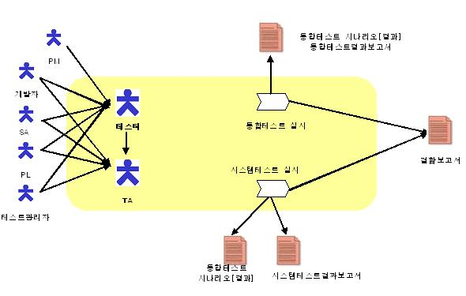

| Concept: 테스트실시활동 개요 |
 |
|
1. 개요 (Overview)
2. 수행 공정(Task)
3. 공정/산출물/역할간의 관계(Process, Deliverables & Role Relationship)
 4. 테일러링 가이드(Tailoring Guide) 4.1 프로젝트에서 계획된 Iteration 단위로 테스트 프로세스도 각 Iteration 별로 반복되어야 한다. Iteration 별로 반복될 때 필요함 부문에 대해 회귀 테스트(Regression Test)를 수행하며, Iteration 별로 추가되거나 수정된 테스트 계획, 시나리오, 테스트 케이스를 통해서 반복적으로 테스트를 수행한다 5. 고려사항(Considerations) 5.1 통합테스트는 확정된 테스트 시나리오에 따라 수행을 하며, 개발자, PL, 테스터는 테스트 결과 및 수정 이후 재테스트 결과를 반드시 기록해야 한다. 별도의 결함관리 툴을 활용하지 않더라도 결함관리는 반드시 수행해야 한다. 5.2 테스트 도중 발견된 결함은 반드시 결함관리 시스템에 등록하여야 하고, 필요하면 결함보고서를 작성하여 공유하도록 한다. 발견된 결함에 대해서는 PL이 조치 담당자(개발자)에게 업무 지시를 하고, 업무 지시를 받은 조치 담당자는 결함을 수정하고 재테스트를 실시한다. 결함 수정 및 재테스트 이후 빌드가 가능한 수준이 되면 수정완료 보고를 한다. |